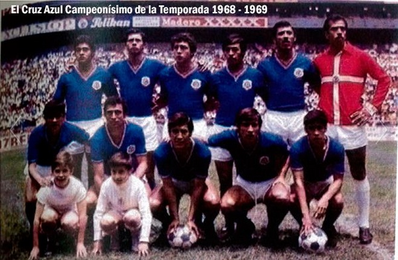
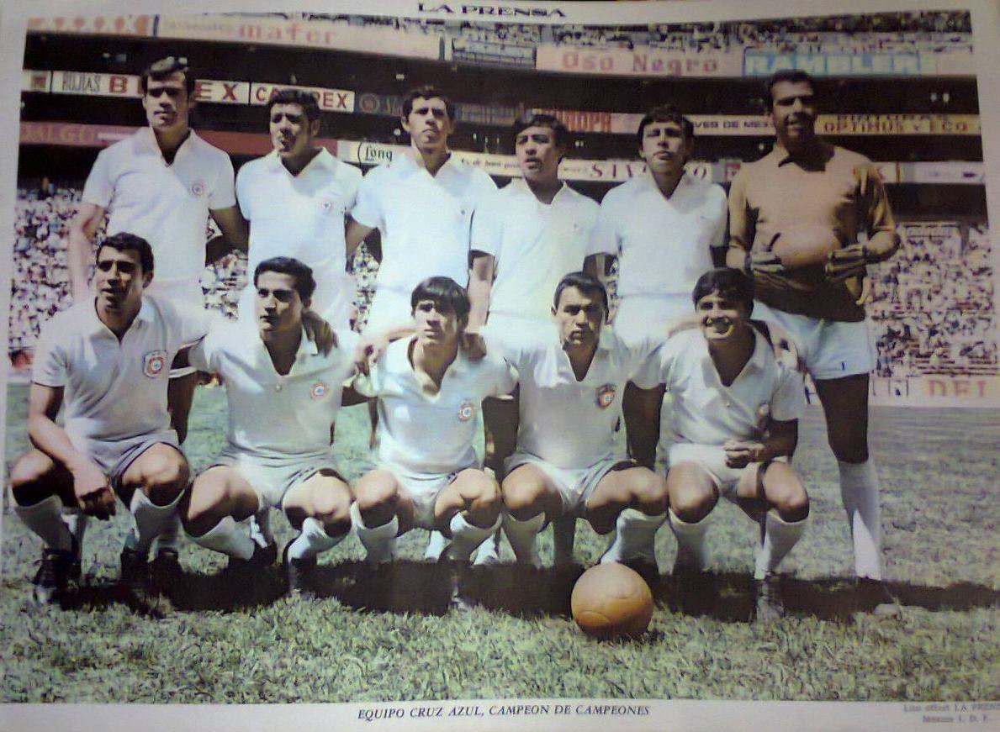
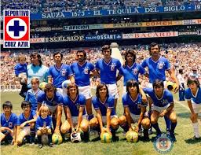
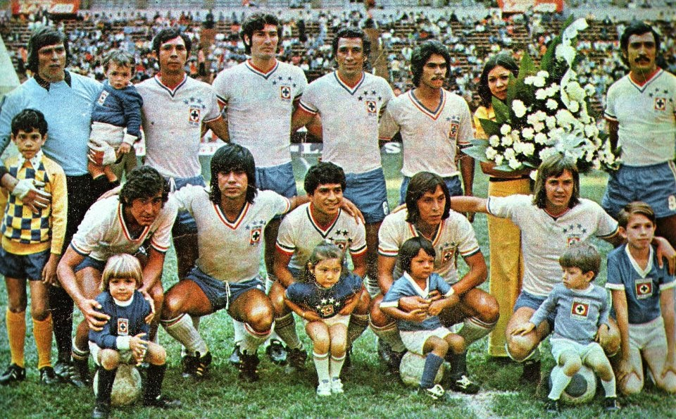
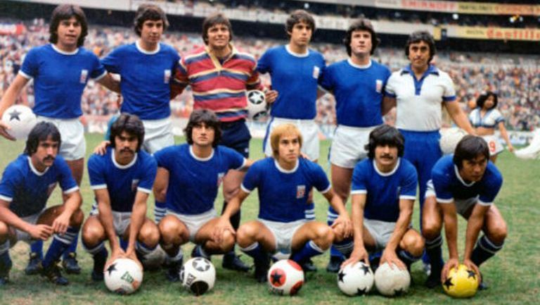
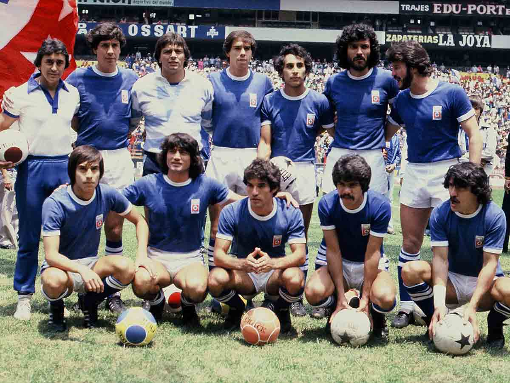
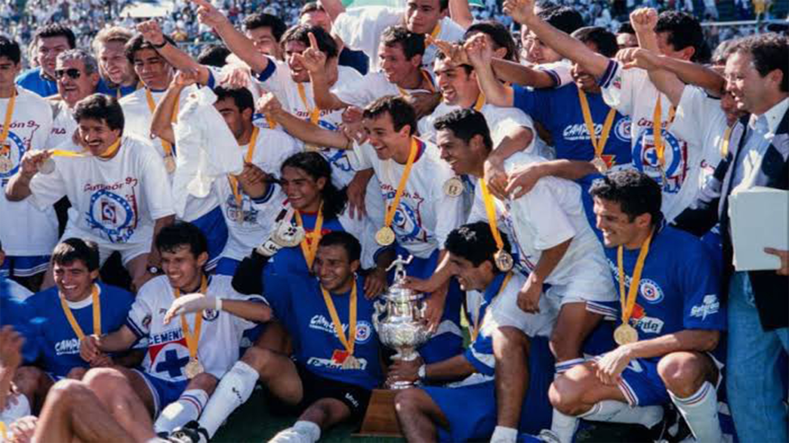
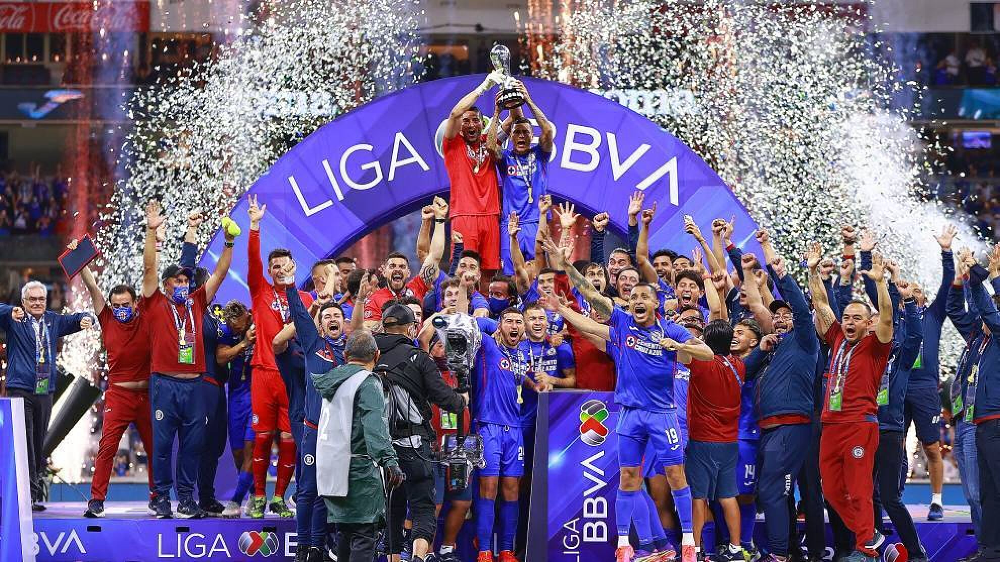

Historia del Equipo
FINALES GANADAS
Con el título de Campeón de Campeones del ciclo 2020-2021, Cruz Azul presume ya 23 títulos en sus vitrinas, la tercera cifra más alta entre los clubes de la Liga MX, solo detrás de América y Chivas. Los dos títulos más recientes, incluido el del Guard1anes 2021, parecen alejar una serie de fantasmas sobre el equipo tras seis Finales perdidas de manera consecutiva en el campeonato local.








